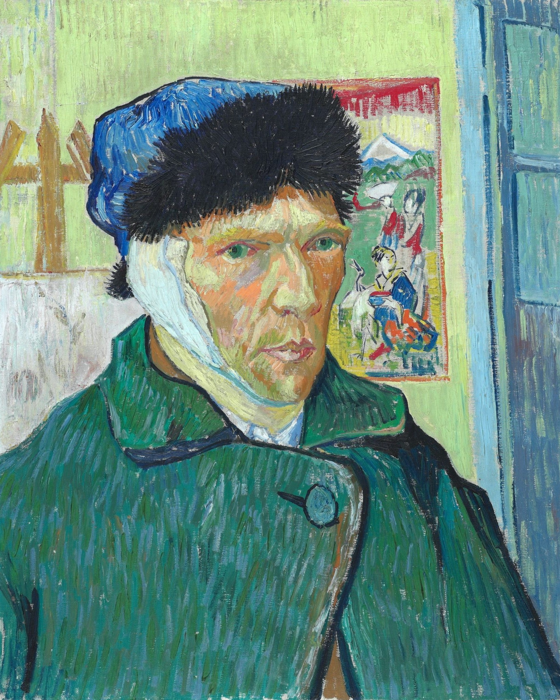
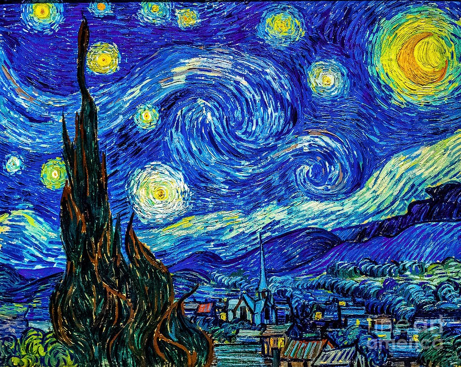

Vincent Van Gogh
(1853-1890) Watch Lifetime -
"I know nothing with any certainty, but the sight of the stars makes me dream."
-
Birth
March 30,1853
 Vincent is born on March 30 in Groot-Zundert, North Brabant, The Netherlands.Vincent's school years were fragmented. In 1869 he moved to Hague to work as a junior aprentice at an art agency.Vincent Van Gogh as we know him today eventually became one of the most famous and noteworthy ainters of western art leading the Impressionism movement.
Vincent is born on March 30 in Groot-Zundert, North Brabant, The Netherlands.Vincent's school years were fragmented. In 1869 he moved to Hague to work as a junior aprentice at an art agency.Vincent Van Gogh as we know him today eventually became one of the most famous and noteworthy ainters of western art leading the Impressionism movement. -
Self Portrait with Straw Hat
Summer 1887
 Completion of first self-potrait- 'Self Portrait with Straw Hat' after having moved to Paris from Brussels and discovered the Impressionists and Post-Impressionists.
Completion of first self-potrait- 'Self Portrait with Straw Hat' after having moved to Paris from Brussels and discovered the Impressionists and Post-Impressionists. -
Sunflower Paintings
February 1888
 Vincent was weakened both mentally and physically and produced very litde work in the hectic environment of Paris. In search of peace and a warm climate he decided to leave for Arles in February to open a school of Art. But he began to suffer from mental illness while comleting the famous sunflower paintings.
Vincent was weakened both mentally and physically and produced very litde work in the hectic environment of Paris. In search of peace and a warm climate he decided to leave for Arles in February to open a school of Art. But he began to suffer from mental illness while comleting the famous sunflower paintings. -
Starry Night over Rhones
September 1888
 Completes the painting of 'Starry Night over Rhones'
Completes the painting of 'Starry Night over Rhones' -
Café Terrace at Night
September 1888
 Vincent rented four rooms in the Yellow House in May and anticipated the arrival of his dear friend Paul Gaugin. During his wait, in early September Van Gogh painted The Night Cafe.
Vincent rented four rooms in the Yellow House in May and anticipated the arrival of his dear friend Paul Gaugin. During his wait, in early September Van Gogh painted The Night Cafe. -
Vincent's Bedroom in Arles
October 1888
 Completes the painting of his bedroom titled 'Vincent's Bedroom in Arles'
Completes the painting of his bedroom titled 'Vincent's Bedroom in Arles' -
Mental Asylum
December 1888
Van Gogh cuts off a portion of his ear and commits himself to a mental asylum in Saint Rémy and eventually ends his close friendship with Paul Gaugin -
Irises
May 1889
 Van Gogh was allowed to start work inside the asylum; an extra room was equipped as a studio. In the garden of the asylum he found countless motifs, including Irises. He also painted and drew the enclosed field which he could see from his window.
Van Gogh was allowed to start work inside the asylum; an extra room was equipped as a studio. In the garden of the asylum he found countless motifs, including Irises. He also painted and drew the enclosed field which he could see from his window. -
Starry Night
June 1889
Completes his most famous and recognised work'Starry Night' -
Autumn Blossom
April 1890
 Completes 'Autumn Blossom'. He leaves Saint Rémy and starts contacting his younger brother Theo, with whom he shared a close relationship
Completes 'Autumn Blossom'. He leaves Saint Rémy and starts contacting his younger brother Theo, with whom he shared a close relationship -
Death
July 29,1890
 Leaves the asylum in May to begin care under Dr. Paul Gachet. Vincent Van Gogh dies at the age of 37 of a self-inflicted gunshot. He was buried on July 30 at Auvers-sur-Oise
Leaves the asylum in May to begin care under Dr. Paul Gachet. Vincent Van Gogh dies at the age of 37 of a self-inflicted gunshot. He was buried on July 30 at Auvers-sur-Oise